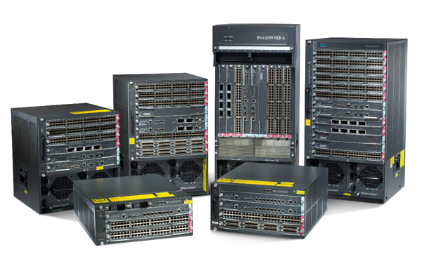
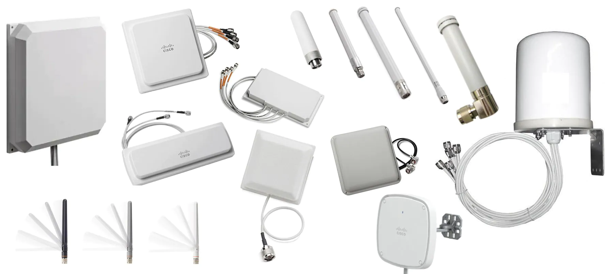

Contamos con routers y switches para su red de datos, tenemos los modelos modulares que pueden ser implementados y el core o en el punto de distribución de su red. Para el acceso poseemos soluciones con distintas densidades
Core y distribución
Para los puntos principales de su red, tenemos equipos de alta capacidad con interfaces, hasta 100Gb con puertos de fibra óptica. Todos los modelos para el core y distribución cuentan con opciones para controladoras y fuentes de energía redundantes
Los equipos tienen soporte para las principales funcionalidades de redes de datos, por lo cual pueden ser utilizados para el desarrollo de redes MPLS con soporte a VPNs capa 2 y cap3. redes corporativas LAN y Campus con soporte a protocolos como OSPF, BGP, RIP, RSTP, VRRP entre otros. Conexiones a internet, redes punto a punto y punto multipunto WAN, asi como soluciones para alta densidad en data centers.
Switches de acceso
Para el acceso contamos con diferente opciones, que permiten conectividad a diferentes tipos de usuarios y terminales. Tenemos opciones de alta densidad para sus centros de conectividad con puertos de hasta 10G en fibra y cobre y switches para puntos remotos con densidades a la medida.
Contamos con modelos para el soporte a power over ethernet, PoE, en sus diferentes versiones.
Todos los equipos que proveemos son administrables, con soporte a protocolos de gestión y monitoreo (SNMPv2/v3, RMON, LLDP). Los mismos cuentan con soporte a diversos LAN para la mejor administración de los dispositivos conectados.

Nuestro portafolio de equipos WiFi, incluye alternativas desde pequeños access points hasta redes de alta capacidad inalambrica coordinados y gestionados a través de controladores WiFi
Access points
Contamos con una gran variedad de access points que se ajustan a diferentes necesidades, contamos con modelos en las bandas 2.4Ghz y 5Ghz y de diversas capacidades, con soporte a los estándares 802.11 a/b/g/ac/ax.
Soporte a multiples tecnologías
Dentro de los diferentes equipos que ofrecemos, se tienen opciones con características como las siguientes:
- Doble banda 2.4Ghz y 5.8Ghz
- Multiples antenas para mayor capacidad
- Topología en malla
- Mimo y Beamforming
- Puertos LAN/WAN de alta capacidad
- Multiples SSIDs
- Opciones para WiFi de largo alcance
- Configuraciones DMZ
Las redes ópticas son la base de las altas capacidades para el transporte de las aplicaciones de la actualidad, proveemos soluciones para las redes metropolitanas, acceso de alta velocidad y soluciones de alta capacidad en data centers
Equipos DWDM redes metropolitanas
Las redes metropolitanas ópticas basadas en la tecnología DWDM, permiten el máximo rendimiento de la infraestructura de fibra óptica, la parte principal de la red, se requiere de alternativas de protección y crecimiento adecuados para a adptación a los diversos cambios durante la operación.
Nuestos equipos proveen tiene la capacidad de crear redes de hasta 88 lambdas de capacidades de 10Gb/100Gb y mas, permitieindo gran capacidad en este tipo de redes. Las redes pueden ser creadas en topologías de anillo o en malla para la máxima protección en caso de fallas. Los equipos cuentan con diversas densidades de puertos y capacidades que se ajustan a cada caso de uso.
Equipos para interconexiones en data centers
Las grandes capacidades que se transportan en un data center y entre data centers requiere de nuevas tecnologías de transporte. Las bondades de los medios ópticos permiten realizar soluciones que provean capacidades de cientos de Gigabits. Proporcionamos soluciones de alta capacidad y mayor densidad en la menor cantidad de unidades de racks, facilitando la interconexión a alta velocidad entre data centers y hacia clientes preferenciales.

Ceteris Paribus Ceteris Paribus Ceteris Paribus CeteSelección de nuestros productoss Ceteris Paribus Ceteris Paribus Ceteris Paribus Ceteris Paribus Ceteris Paribus Ceteris Paribus Ceteris Paribus
Ceteris Paribus Ceteris Paribus Ceteris Paribus Ceteris Paribus Ceteris Paribus
Productos que hacen la diferencia
Ceteris Paribus Ceteris Paribus Ceteris Paribus Ceteris Paribus Ceteris Paribus Ceteris Paribus Ceteris Paribus Ceteris Paribus Ceteris Paribus Ceteris Paribus Ceteris Paribus Ceteris Paribus
Ceteris Paribus Ceteris Paribus Ceteris Paribus Ceteris Paribus Ceteris Paribus Ceteris Paribus Ceteris Paribus Ceteris Paribus Ceteris Paribus Ceteris Paribus Ceteris Paribus Ceteris Paribus Ceteris Paribus Ceteris Paribus Ceteris Paribus Ceteris Paribus Ceteris Paribus
Ceteris Paribus Ceteris Paribus Ceteris Paribus Ceteris Paribus Ceteris Paribus Ceteris Paribus Ceteris Paribus Ceteris Paribus Ceteris Paribus Ceteris Paribus Ceteris Paribus Ceteris Paribus Ceteris Paribus Ceteris Paribus Ceteris Paribus Ceteris Paribus Ceteris Paribus
Ceteris Paribus Ceteris Paribus Ceteris Paribus Ceteris Paribus Ceteris Paribus
Ceteris Paribus Ceteris Paribus Ceteris Paribus Ceteris Paribus Ceteris Paribus Ceteris Paribus Ceteris Paribus Ceteris Paribus Ceteris Paribus Ceteris Paribus Ceteris Paribus Ceteris Paribus
Ceteris Paribus Ceteris Paribus Ceteris Paribus Ceteris Paribus Ceteris Paribus Ceteris Paribus Ceteris Paribus Ceteris Paribus Ceteris Paribus Ceteris Paribus Ceteris Paribus Ceteris Paribus Ceteris Paribus Ceteris Paribus Ceteris Paribus Ceteris Paribus Ceteris Paribus
Ceteris Paribus Ceteris Paribus Ceteris Paribus Ceteris Paribus Ceteris Paribus